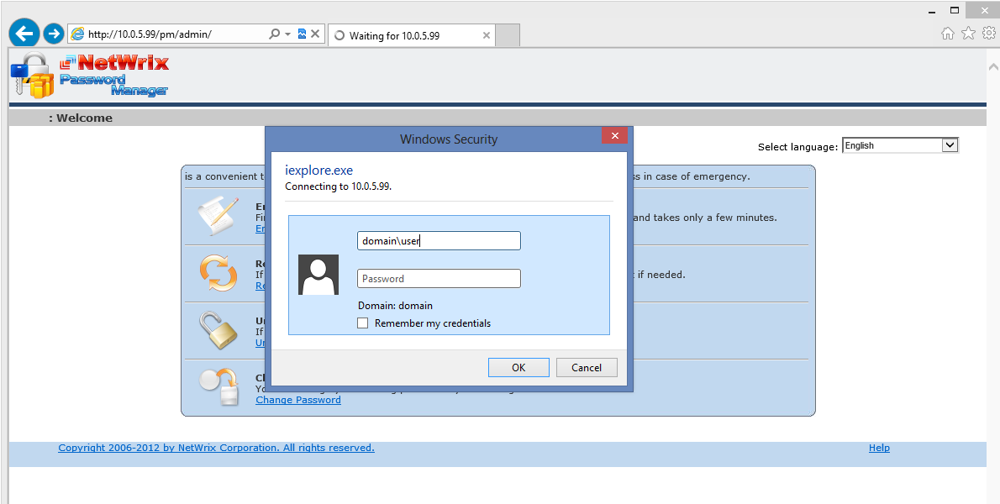

When trying to access Admin or Helpdesk portal, in both cases you receive an IIS login
prompt that you are unable to get past.

You have verified that username and password are correct.
The portals keep prompting for credentials because the account you are entering cannot be used to authenticate for some reason. It can happen if, for example:
To resolve the issue please verify the following:
The portals keep prompting for credentials because the account you are entering cannot be used to authenticate for some reason. It can happen if, for example:
- Authentication settings are misconfigured
- The account does not have read NTFS permissions to the files
- Proxy is affecting request
To resolve the issue please verify the following:
- It is not because of Loopback authentication. http://support.microsoft.com/kb/896861
- All authentication types excepting Windows authentication or Basic authentication are disabled in the Internet Information Services (IIS) Manager, and either Windows or Basic authentication is enabled.To ensure the required settings are enabled in IIS6, do the following: a) In the IIS Manager left pane, navigate to the Password manager virtual directory (by default <your computer name> -> Web Sites -> Default Web Site -> PM). b) Right-click the PM folder and select Properties. c) In the Properties dialog, open the Directory Security tab, and select Edit for Authentication and Access Control. d) In the Authentication Methods dialog, select either the Integrated Windows authentication box or Basic authentication (password is sent in clear text), and clear all other authentication options for Authentication access.
- The account you are using has READ access to the physical directory of the Web-portal (by default C:Program Files (x86)Netwrix Password Manager
- Your proxy server is disabled or bypassed. To check the proxy settings, do the following: a) Go to Control panel -> Internet options. b) In the Internet Properties dialog, open the Connections tab and click the LAN settings button. c) Make sure the Use a proxy server for your LAN option is not enabled. Otherwise, make sure the Bypass proxy server for local addresses option is enabled too; in this case the Help-Desk portal must be a member of the Local intranet zone, or specified as an exception.